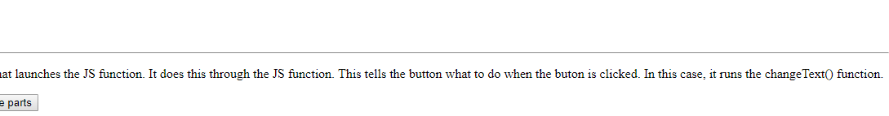
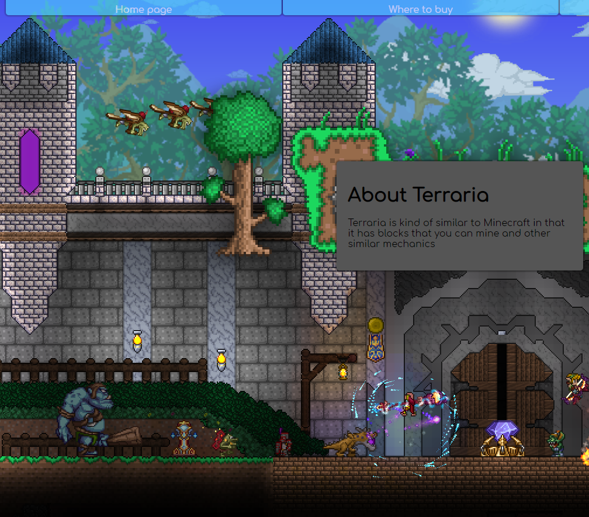
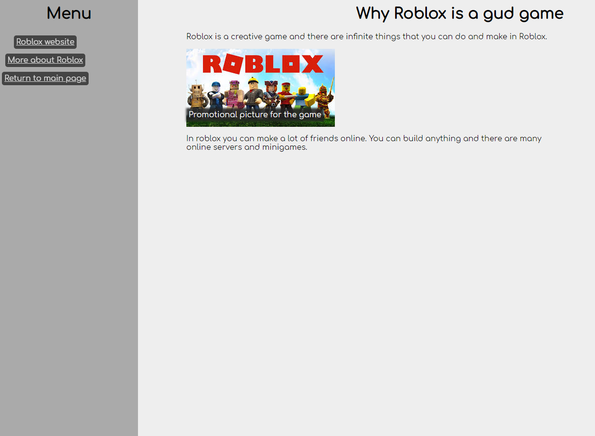
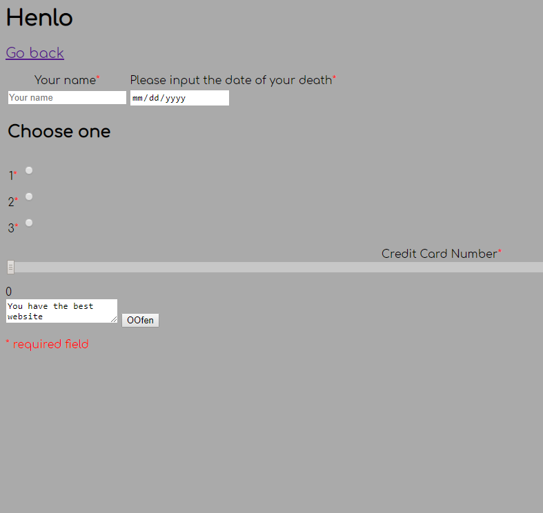
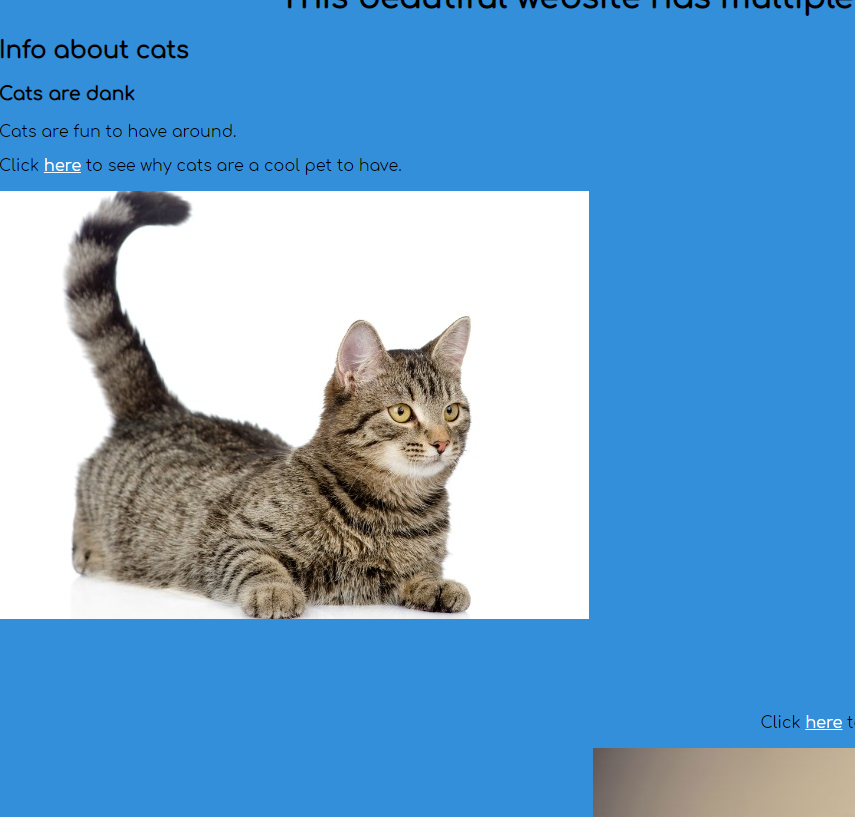
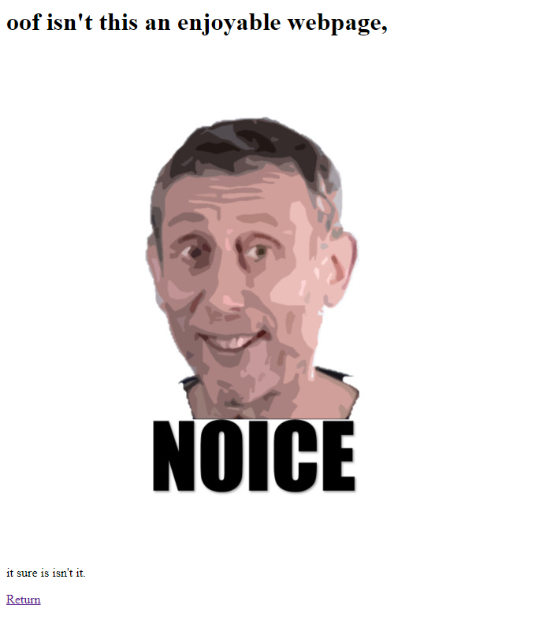
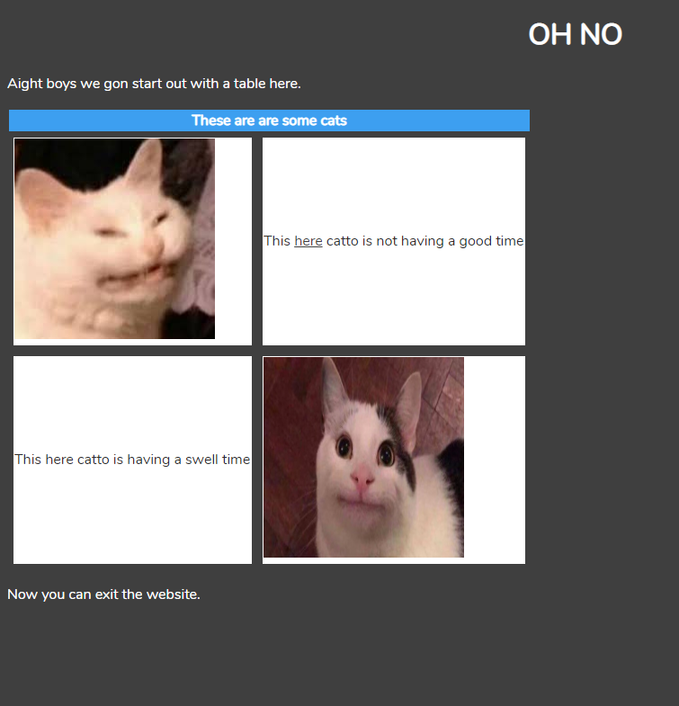
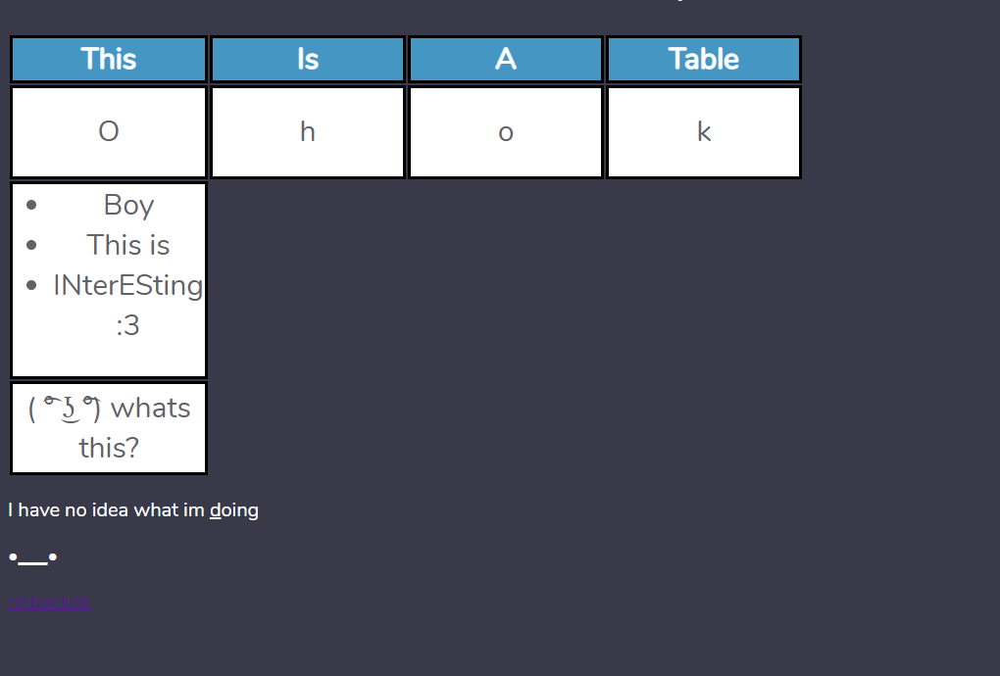

| 8 |
 |
- We learn about javascript in this task
- Is pretty neat
|
| 7 |
 |
- We learn more about external css
- We also learn about pseudo classes like a:link
|
| 6 |
 |
- We learned about external css in this task
- We also learned about classes
|
| 5 |
 |
- We learn about forms in this task
- They are pretty fun
- They are used with php usually but we aren't using that tho
|
| 4 |
 |
- In this task we learn about css and multipage websites
- CSS is used for making webpages less crappy looking
- with the exception of me
- I somehow make it look worse
|
| 3 |
 |
- Its the page you are looking at
- Its meant to hold all of the pages I've made
- Yeah
|
| 2 |
 |
- This page has a table with two pictures
- It also has links
- Thats it really
|
| 1 |
 |
- Learned webpage basics
- Created table
- Learned different html tags
|